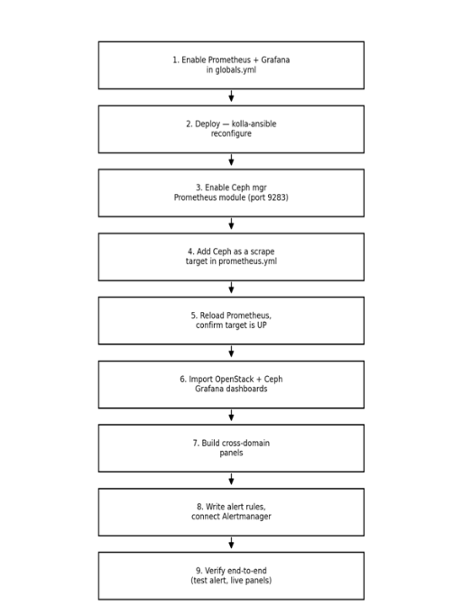

Final Recommendation Best Tool for Monitoring OpenStack Integrated with Ceph
After evaluating all available options (Zabbix, Ceph Dashboard alone, Telegraf + InfluxDB + Grafana, ELK/OpenSearch alone, Nagios/Icinga, two separate Grafana instances, and newer 2026 tools such as VictoriaMetrics, SigNoz, Datadog, and Last9), Prometheus + Grafana, run as one shared instance, is confirmed as the best and final tool for monitoring the entire OpenStack deployment integrated with Ceph on a single dashboard.
Why Prometheus + Grafana Is the Best Choice
Kolla-Ansible already deploys Prometheus and Grafana by default, with exporters for Nova, Neutron, Keystone, Cinder, HAProxy, MariaDB, RabbitMQ, and hosts no new tool needs to be introduced.
Ceph natively exposes a Prometheus-compatible /metrics endpoint via ‘ceph mgr module enable prometheus’ on port 9283 no separate agent or exporter is required.
Adding Ceph as one more scrape target in the same prometheus.yml Kolla-Ansible manages brings both systems into one Prometheus instance.
Importing Ceph’s official Grafana dashboards (Cluster, OSD, Pool, RBD Overview) into the same Grafana that holds the OpenStack dashboards produces a single, unified view.
Cross-domain panels can be built e.g., Cinder volume creation time next to Ceph pool IOPS
showing immediately whether a slowdown originates in the compute/API layer or the Ceph storage backend.
One Alertmanager/Grafana Alerting pipeline routes both OpenStack and Ceph alerts to the same notification channel.
No licensing cost, no third-party data sharing, and no custom integration scripts, unlike every alternative evaluated.
How Prometheus + Grafana Works (Mechanics)
Prometheus (the collector)
Works on a “pull” model it reaches out to targets on a timer (default 15–30 seconds) instead of waiting for them to send data.
Each target (an “exporter”) runs a tiny web server exposing a /metrics page in plain text.
Prometheus reads that page, timestamps every value, and stores it in its own built-in time-series database on disk.
Nothing else in the stack collects data Grafana and Alertmanager both depend on Prometheus already having it.
Grafana ( the display)
Connects to Prometheus as a “data source” and runs PromQL queries behind the scenes when a dashboard is opened.
Turns the returned numbers into graphs, gauges, and tables.
Allows importing ready-made dashboards (JSON files) instead of building panels from scratch.
Alertmanager (the notifier)
Prometheus itself decides when something is wrong, based on rules written in advance (e.g., “OSD down for 5+ minutes”).
It hands the firing alert to Alertmanager, which groups similar alerts, avoids duplicate pings, and sends the notification to Slack/email.
Step-by-Step Process Production Setup

Enable the stack in Kolla-Ansible : set enable_prometheus: “yes” and enable_grafana: “yes” in globals.yml.
Deploy it run ‘kolla-ansible reconfigure’ (or deploy); Kolla installs Prometheus, Grafana, and the OpenStack exporters as containers automatically, and wires the scrape config.
Turn on Ceph’s own metrics endpoint run ‘ceph mgr module enable prometheus’ on the Ceph cluster; this exposes /metrics on port 9283, no agent required.
Point Prometheus at Ceph add the Ceph mgr node’s IP and port 9283 as one more entry in the scrape_configs section of prometheus.yml.
Restart/reload Prometheus so it picks up the new target check the Prometheus “Targets” page to confirm Ceph shows as UP.
Import dashboards into Grafana use the official dashboard IDs (OpenStack: 9701/21085, Ceph: 2842) so both sets of panels exist in the same Grafana instance.
Build cross-domain panels place an OpenStack metric and a Ceph metric on the same panel (e.g., Cinder volume creation time next to Ceph pool IOPS) so cause and effect are visible together.
Write alert rules covering both systems (OSD down, Galera desync, disk full, HAProxy backend down) and route them through Alertmanager to one shared channel.
Verify end-to-end trigger a test alert, confirm it reaches Slack/email, and confirm both OpenStack and Ceph panels update live in Grafana.
Result
Once these steps are complete, opening one Grafana URL shows the health of the entire OpenStack deployment and the Ceph storage backend on a single screen instance counts, service status, database quorum, and Ceph OSD/pool health sit alongside correlated performance graphs (Cinder next to Ceph latency, Nova boot time next to pool IOPS) and live alerts, giving operators one place to look during both routine checks and incident response.